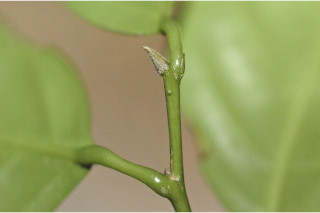
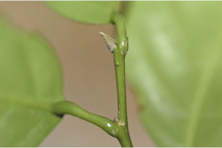

Images :
 



| Habit : | Trees up to 15 m tall. |
| Leaves : | Leaves simple , alternate , spiral ; stipules oblong-lanceolate , acute , caducous ; petiole 0.7-1.3 cm long, canaliculate , swollen at both ends, glabrous ; lamina 7.5-17 x 3-7.5 cm, narrow oblong to narrow elliptic , apex gradually acuminate to caudate - acuminate with blunt tip, base acute to rounded , chartaceous , glabrous ; midrib raised above; secondary_nerves 6-9 pairs; tertiary_nerves weakly percurrent . |
| Inflorescence / Flower : | Flowers unisexual , dioecious ; male flowers in axillary catkins ; female flowers in condensed cymes . |
| Fruit and Seed : | Capsule smooth, globose , to 1.3 cm across, 2-4 seeded . |